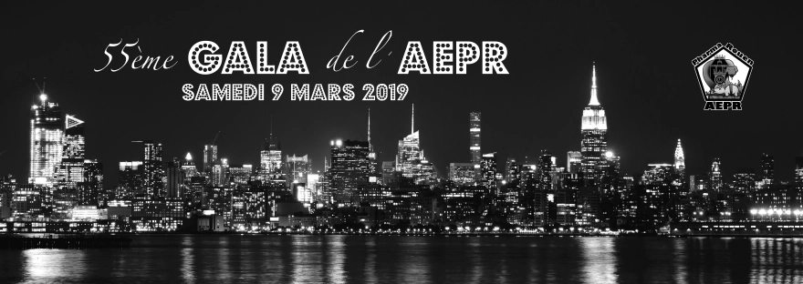

55e Gala de l’AEPR
Après plusieurs mois de préparation, par nos trois membres du pôle, a enfin eu lieu la tant attendue soirée de gala de l’AEPR ! En effet, ce samedi 9 mars, se sont réunis plus de 200 étudiants rouennais et venant d’autres villes comme Amiens, Tours, Lille, Dijon et Clermont-Ferrand.
Également conviés à la soirée, quelques partenaires de l’association sont venus célébrer avec nous : le directeur régional de la CERP ainsi que deux membres de la BNP. Et bien sûr le doyen de la faculté de pharmacie, M.Guerbet, nous a fait l’honneur d’être présent.
Cette année, nous avions organisé un repas/cocktail debout dans le magnifique cadre qu’est le restaurant « La FabriK' », en bord de Seine, à Rouen ; le tout dans un thème New Yorkais.
Une fois le repas terminé, la fête a battu son plein aux rythmes de la musique jusqu’à 4h du matin !
